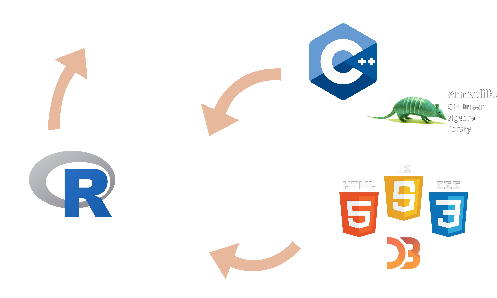
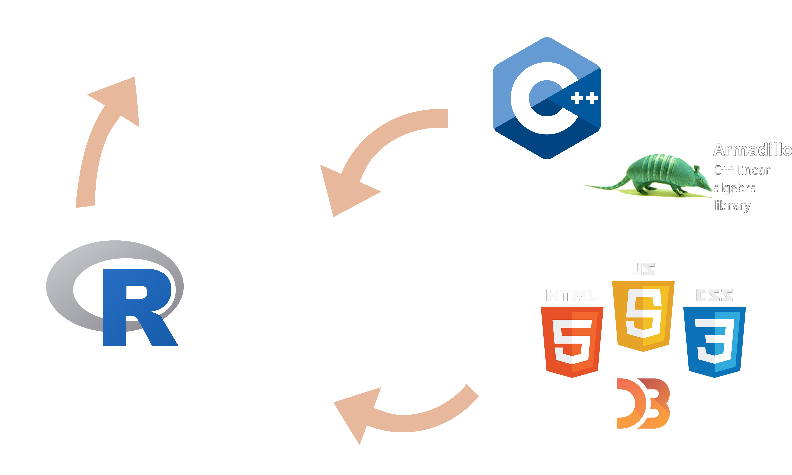

compboost
Efficient and Distributed Model-Based Boosting for Large Datasets
Created by Daniel Schalk
Content
About Compboost
About compboost
- Component-wise/model-based boosting algorithm written in
C++. - Accessible through
Rby exposing the important classes. C++documentation generated bydoxygen.-
Unit tested
 and code coverage
and code coverage  .
.
Infrastructure of compboost

 

C++ and Rcpp
- Expensive algorithms are written in
C++. - Exporting
C++toRusingRcpp. - Using
Rcpp Armadillofor linear algebra operations. -
But why using
C++:-
In model-based boosting with, for example, 1 000 base-learner and 1 500 iterations
1 500 000 models must be trained.
\(\Rightarrow\) Very expensive. -
For loops in
Rare also expensive, inC++they aren't.
-
In model-based boosting with, for example, 1 000 base-learner and 1 500 iterations
1 500 000 models must be trained.
But Why C++
train.test = "
arma::mat trainTest (arma::mat X, arma::mat y)
{
return arma::inv(X.t() * X) * X.t() * y;
}
"
trainTestR = function (X, y) { return (solve(t(X) %*% X) %*% t(X) %*% y) }
Rcpp::cppFunction(code = train.test, depends = "RcppArmadillo", rebuild = TRUE)
n = 50000
p = 40
X = matrix(rnorm(n * p), nrow = n, ncol = p)
y = matrix(runif(n), nrow = n, ncol = 1)
# Equivalent to spline train:
microbenchmark::microbenchmark(
"C++" = trainTest(X, y),
"R" = trainTestR(X, y)
)
## Unit: milliseconds
## expr min lq mean median uq max neval cld
## C++ 40.19887 41.17449 42.16829 41.70505 42.99132 46.74248 100 a
## R 95.91568 98.72515 111.33488 102.18383 105.70319 211.14321 100 b
But Why C++
HTML, CSS and JavaScript
- Providing an web app written in
HTMLto explore the model. - To get interactive graphics use
JavaScriptandD3. - Generating necessary data and parsing web app from
R.
Collecting Everything With R
- API to train and modify the model as well as static plots.
- Simple way to continue training or set the algorithm to another iteration.
-
Provide generic functions (
predict,print,summary,plot) for acompboostclass. - Export csv files containing parameters and the risk to parse the web app.
Class System of Compboost
Class System of compboost
-
Example by taking a look at the
QuadraticLossclass for:C++classC++wrapper classR S4class
-
This illustrates the process from
C++toR.
C++ Classes: Abstract Loss
class Loss
{
public:
/// Specific loss function
virtual arma::vec definedLoss (const arma::vec&, const arma::vec&) const = 0;
/// Gradient of loss functions for pseudo residuals
virtual arma::vec definedGradient (const arma::vec&, const arma::vec&) const = 0;
/// Constant initialization of the empirical risk
virtual double constantInitializer (const arma::vec&) const = 0;
virtual ~Loss ();
protected:
/// Custom offset:
double custom_offset;
/// Tag if a custom offset is used
bool use_custom_offset = false;
/// Weights:
arma::vec weights;
};
C++ Classes: Child QuadraticLoss
class QuadraticLoss : public Loss
{
public:
/// Default Constructor
QuadraticLoss ();
/// Constructor to initialize custom offset
QuadraticLoss (const double&);
/// Specific loss function
arma::vec definedLoss (const arma::vec&, const arma::vec&) const;
/// Gradient of loss functions for pseudo residuals
arma::vec definedGradient (const arma::vec&, const arma::vec&) const;
/// Constant initialization of the empirical risk
double constantInitializer (const arma::vec&) const;
};
C++ Classes: Child QuadraticLoss Implementation
QuadraticLoss::QuadraticLoss () { }
QuadraticLoss::QuadraticLoss (const double& custom_offset0)
{
custom_offset = custom_offset0;
use_custom_offset = true;
}
arma::vec QuadraticLoss::definedLoss (const arma::vec& true_value,
const arma::vec& prediction) const
{
return arma::pow(true_value - prediction, 2) / 2;
}
arma::vec QuadraticLoss::definedGradient (const arma::vec& true_value,
const arma::vec& prediction) const
{
return prediction - true_value;
}
double QuadraticLoss::constantInitializer (const arma::vec& true_value) const
{
if (use_custom_offset) { return custom_offset; }
return arma::mean(true_value);
}
C++ Wrapper Classes
class QuadraticLossWrapper : public LossWrapper
{
public:
QuadraticLossWrapper () { obj = new loss::QuadraticLoss(); }
QuadraticLossWrapper (double custom_offset) { obj = new loss::QuadraticLoss(custom_offset); }
arma::vec testLoss (arma::vec& true_value, arma::vec& prediction) {
return obj->definedLoss(true_value, prediction);
}
arma::vec testGradient (arma::vec& true_value, arma::vec& prediction) {
return obj->definedGradient(true_value, prediction);
}
double testConstantInitializer (arma::vec& true_value) {
return obj->constantInitializer(true_value);
}
};
Rcpp Module
RCPP_EXPOSED_CLASS(LossWrapper);
RCPP_MODULE (loss_module)
{
using namespace Rcpp;
class_< LossWrapper > ("Loss")
.constructor ()
;
class_< QuadraticLossWrapper > ("QuadraticLoss")
.derives< LossWrapper > ("Loss")
.constructor ()
.constructor < double > ()
.method("testLoss", &QuadraticLossWrapper::testLoss,
"Test the defined loss function of the loss")
.method("testGradient", &QuadraticLossWrapper::testGradient,
"Test the defined gradient of the loss")
.method("testConstantInitializer", &QuadraticLossWrapper::testConstantInitializer,
"Test the constant initializer function of the loss")
;
}
R S4 Classes
QuadraticLoss
## C++ class 'QuadraticLoss' <0000000010de5960>
## Constructors:
## QuadraticLoss()
## QuadraticLoss(double)
##
## Fields: No public fields exposed by this class
##
## Methods:
## double testConstantInitializer(arma::Col< double >)
## docstring : Test the constant initializer function of the loss
## arma::Col< double > testGradient(arma::Col< double >, arma::Col< double >)
## docstring : Test the defined gradient of the loss
## arma::Col< double > testLoss(arma::Col< double >, arma::Col< double >)
## docstring : Test the defined loss function of the loss
##
q.loss = QuadraticLoss$new()
q.loss$testConstantInitializer(1:10)
## 5.5
URL Diagram With all Classes

Small Benchmark:
Compboost vs Mboost
Setup
- For each benchmark, runtime and memory was measured for varying numbers of observations, iterations and base-learners using splines and linear base-learners.
-
Benchmark with simulated data:
- Correlation of features are Beta(1,8) distributed.
- Dataset is is simulated by a multivariate gaussian with the correlations from 1.
- Coefficients are simulated from a U[-2,2] distribution.
- Target variable y is calculated as linear combination of the data and parameter.
Runtime Benchmark
- Each experiment is repeated five times using the package
batchtools. -
While varying a parameter the other default values are:
- Number of observations: 2 000
- Number of iterations: 1 500
- Number of base-learners: 1 000
Storing Inverse to Increase Performance
-
Compboostas well asmbooststores the inverse to boost performance of the algorithm. - Most base-learners solves a system of linear equations: \[ \widehat{\beta} = \left(X^TX + \lambda K\right)^{-1} X^Ty \]
- The trick is to store \(\left(X^TX + \lambda K\right)^{-1}\) once and reuse this matrix for every new training.
Memory Benchmark
-
Comparison between
compboostandmboostwith disabling and enabling sparse matrices formboost. -
The common
Rpackages to get memory usage have some issues in tracking memory allocations done on the heap byC++
\(\Rightarrow\) Small helperC++program to track the memory usage every second.
Memory Benchmark
-
The following image was made by using 1 000 base-leanrer,
1 000 iterations and 50 000 observations. - Storing the data as dense matrices uses about 9.2 GB RAM: \[ 50 000\ \cdot\ 23\ \cdot\ 1 000\ \cdot\ 8\ Bytes\ \approx\ 9.2\ GB \]
- Additionally, storing the inverse takes just 0.004 GB: \[ 23\ \cdot\ 23\ \cdot\ 1 000\ \cdot\ 8\ Bytes\ \approx\ 0.004\ GB \]
Next Steps
R API
R cannot just be used to run the main algorithm but also to:
- Provide a formula API which is common to most
Rusers. - Parallelize the data transformations.
- Memory handling by deleting unused data sources.
Optimizing Code
-
Different ways of possible parallel computations:
- Doing parallelizations within
Rto transform the data parallel instead of sequential. - Doing parallelizations within
C++to find the best base-learner in parallel.
- Doing parallelizations within
- Using sparse matrices to use less memory and speed up the algorithm.
Sparse Matrices
Depending on the structure, it is possible to increase performance:
dense.spline.train = "
arma::mat test1 (arma::mat Z, arma::mat X, arma::mat y) { return Z * X * y; }
"
sparse.spline.train = "
arma::mat test2 (arma::mat Z, arma::sp_mat X, arma::mat y)
{
// Brackets are important due to CSC format:
return Z * (X * y);
}
"
Rcpp::cppFunction(code = dense.spline.train, depends = "RcppArmadillo", rebuild = TRUE)
Rcpp::cppFunction(code = sparse.spline.train, depends = "RcppArmadillo", rebuild = TRUE)
n = 100000; p = 40;
Z = matrix(runif(p^2), p, p)
X = matrix(0, nrow = n, ncol = p)
X[1:n, sample(1:p, 5)] = rnorm(10000 * 5)
y = matrix(runif(n), nrow = n, ncol = 1)
betas = matrix(runif(p), nrow = p, ncol = 1)
X.sparse = as(X, "sparseMatrix")
# Equivalent to spline train:
microbenchmark::microbenchmark(
"dense spline train" = test1(Z, t(X), y),
"sparse spline train" = test2(Z, t(X.sparse), y)
)
## Unit: milliseconds
## expr min lq mean median uq max neval cld
## dense spline train 26.72330 28.01085 44.14224 29.70544 32.75517 144.2635 100 b
## sparse spline train 10.13785 10.55193 15.07657 10.93836 11.60216 130.8875 100 a
Visualizing compboost
- Static graphics with standard
Rplotting systems likebaseorggplot2. - Interactive Visualization with
HTMLandJavaScript.
Greater Functionality
- More supported base-learner.
- Greater number of supported loss functions.
- Additional optimizer.
- Possibility to combine base-learner to more complex ones.